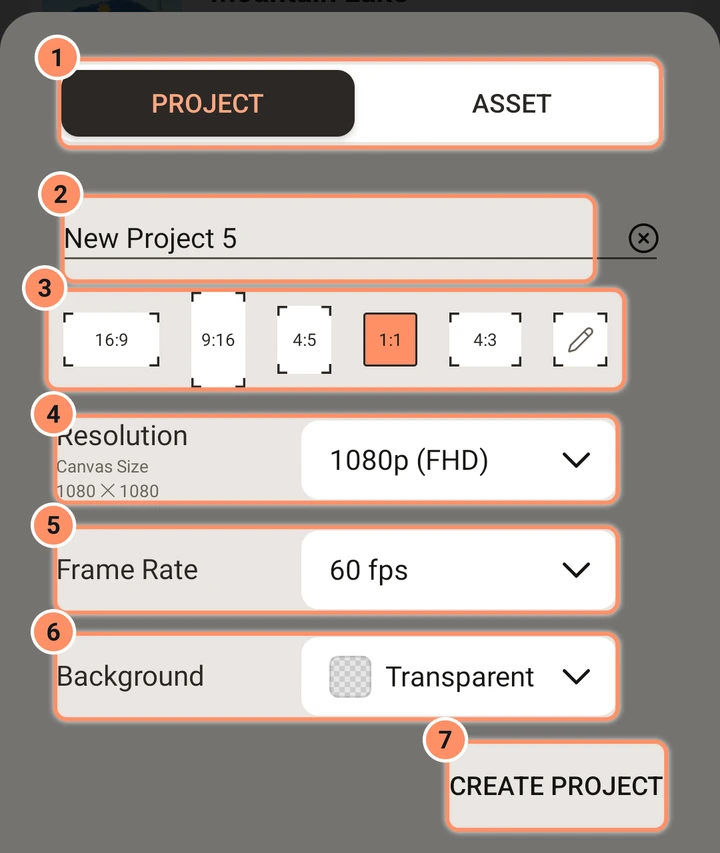

プロジェクトの作成
新規プロジェクトシートのすべての設定。
ホーム画面の下部にある丸い+をタップします。下からシートがせり上がります。前回使った値（形状、解像度、フレームレート、背景。名前は毎回新しくなります）で開きます。何も作成せずに閉じるには、戻るをタップします。

プロジェクトまたはアセット
上部のスイッチには2つの選択肢があります。プロジェクト（デフォルト）とアセットです。アセットは透明な背景を持つ再利用可能なパーツです。背景設定は透明に固定されます。アセット、テンプレート、プリセットを参照してください。
名前
名前は最初「新規プロジェクト1」「新規プロジェクト2」などのようになります（アセットでは「新規アセット」から始まります）。フィールドのXをタップすると消去できます。名前が空の場合はデフォルトに戻ります。
画面の形状（アスペクト比）
16:9、9:16、4:5、1:1、4:3のボタンと、カスタムアスペクト比用の鉛筆ボタンがあります。デフォルトは1:1です。スマートフォンの動画には9:16、横長動画には16:9を選びます。
解像度
解像度の行には、1920 x 1080のようなキャンバスサイズが表示されます。5つの形状では、短辺のリストになります。
| 選択肢 | 短辺 |
|---|---|
| 2160p (4k) | 2160 |
| 1440p (QHD) | 1440 |
| 1080p (FHD)、デフォルト | 1080 |
| 720p (HD) | 720 |
| 540p (SD)、360p、270p、180p | 名前のとおり |
長辺は形状に合わせて決まります。16:9の1080pプロジェクトは1920 x 1080、4:5のプロジェクトは1080 x 1350、4:3のプロジェクトは1440 x 1080になります。
カスタムアスペクト比では、リストが幅と高さの2つの数値フィールドに変わり、その間に丸いリンクボタンがあります。リンクがオンのとき、片側を変更しても、リンクをオンにした時点の2つのフィールドの形状が保たれます。各辺は32～4096ピクセルの範囲で設定できます。フィールドから離れると、アプリが値を補正します。
キャンバスが大きいほどくっきり見えますが、メモリをより多く使い、書き出しに時間がかかります。ほとんどのプロジェクトには1080pがおすすめです。解像度は後からエディターのプロジェクト設定で変更できますが、レイヤーは拡大縮小されません。
フレームレート
12、15、18、20、24、25、30、48、50、60フレーム/秒から選びます。デフォルトは60です。フィルム風の見た目と小さいファイルには24または30、滑らかな速い動きには60を使います。エディターと書き出しがフレームを描画する頻度を設定します。動画クリップはそれぞれのフレームレートを保ちます。フレーム補間オプションは書き出しページを見てください。
背景
レイヤーの後ろの色です。ブラック、白、ライトグレー、緑、青、透明（チェッカー模様で表示）から選びます。新規インストール時は透明です。書き出した動画の透明部分は黒になります。GIFと画像の書き出しでは透明部分を何にするか選べますが、PNGでは透明のまま保持されます。
下部のボタン
- プロジェクトを作成（アセットの場合はアセットを作成）でプロジェクトを作成し、そのプロジェクトでエディターを開きます。
- その下のXでシートを閉じます。
ストレージが足りない場合は、その旨が表示され、プロジェクトは作成されません。